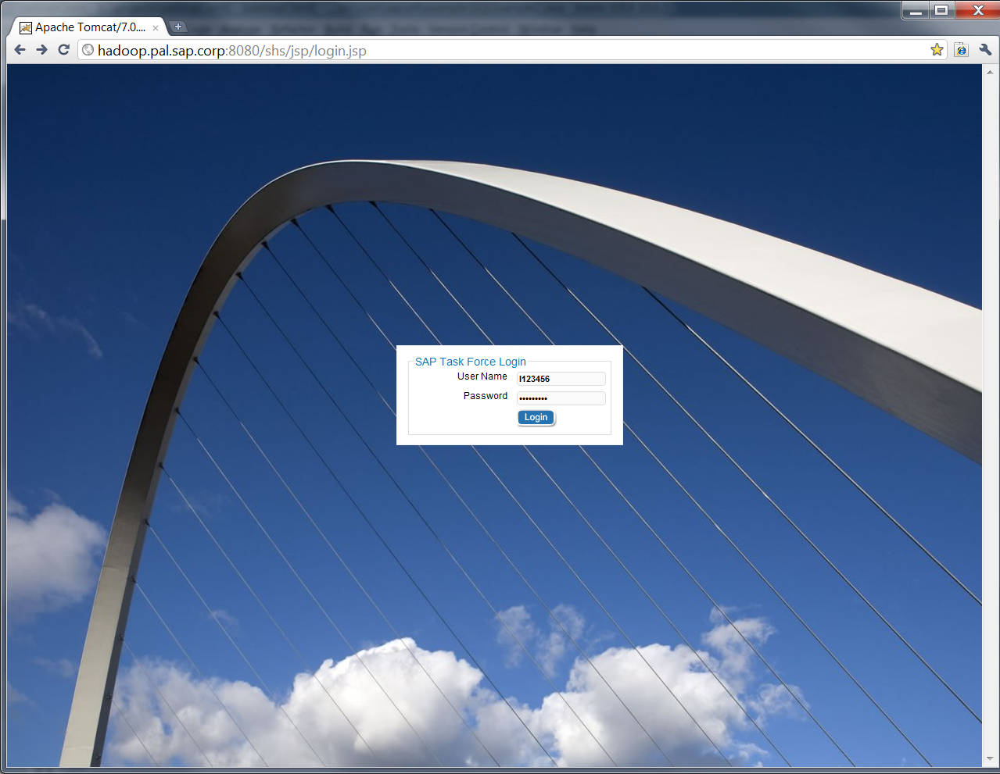
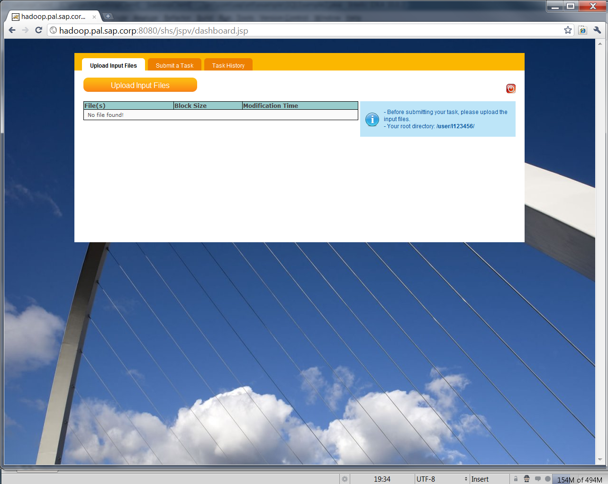
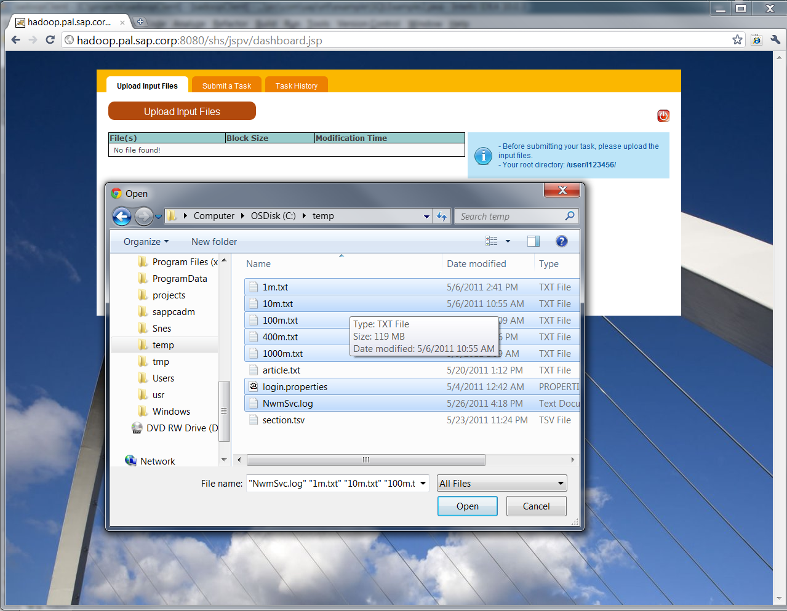
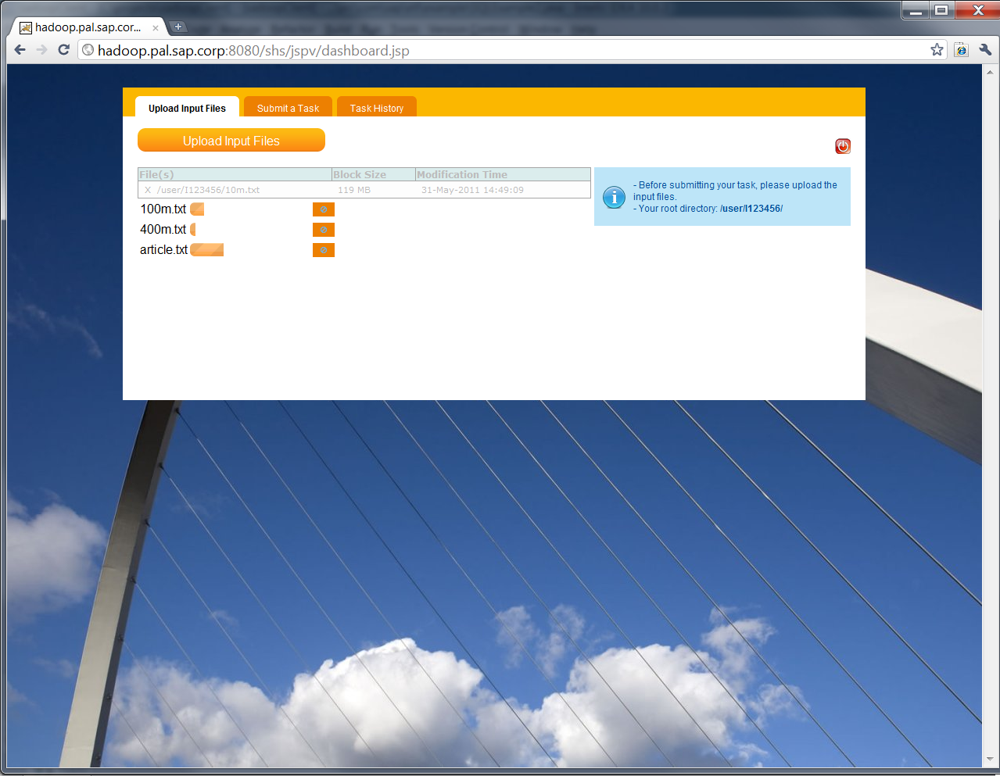

SAP Task Force is a prototype J2EE web application built to facilitate submitting organic MapReduce tasks to prototype SAP Hadoop cluster.
It is highly recommended that you read MapReduce tutorial before proceeding with this code lab.
This code lab will mainly focus on the following:
10.48.171.223 hadoop01
10.48.171.224 hadoop02
10.48.171.225 hadoop03
10.48.171.226 hadoop04
10.48.171.227 hadoop05
10.48.171.228 hadoop06
10.48.171.229 hadoop07
10.48.171.230 hadoop08
10.48.171.231 hadoop09
10.48.171.216 hadoop10
It is recommended that you request a login for using SAP Task Force web prototype application because resource security is based on POXIS.
Of course, there is a default login for visitors but please note that the files uploaded via the default login are not protected and can be removed by other visitors.
Here is the login page of Task Force:

You can either enter your Task Force login or simply click login to use the visitor account.
Prototype SAP Hadoop cluster uses HDFS as its primary storage system. Therefore, before submitting your MapReduce tasks, you have to upload the input files to HDFS.
1. Task Force provides a multipart upload form for uploading multiple files to HDFS, files uploaded via the uploader will be stored at user's personal HDFS folder:

2. Click on the "Uplaoder Input Files" button brings up the multi-file selector:
You can select multiple files and upload them altogether by clicking "Open" button:

3. The uploader will show the status of each upload and refresh the file table when a file is done uploading:

Like other Hadoop clusters, MapReduce tasks need to be uploaded as a jar file and submitted to the server. The Task Submitter UI provides an easy way to upload your jar file and select MapReduce class to run.
1. Clicking on the "Submit a Task" tab allows you to submit your MapReduce task from a jar file. This jar file should contain your MapReduce task in a single class.
For example, below is a sample MapReduce for sorting numbers from /user/I123456/randomNumbers.csv.
please note that /user/I123456/ is the default visitor HDFS folder, if you use your own account, then your MapReduce will be reading from your own personal HDFS folder.
Very important: You MapReduce task should implement ITask interface and have a main() method like the example code shown below for job submission logic
Very important: You need to call waitForCompletion(true) on the job object when you submit it otherwise Task Force web application will not be able to keep your job submission history.
package com.sap.mapred;
import com.sap.hadoop.task.ITask;
import org.apache.hadoop.fs.FileSystem;
import org.apache.hadoop.fs.Path;
import org.apache.hadoop.io.IntWritable;
import org.apache.hadoop.io.LongWritable;
import org.apache.hadoop.io.Text;
import org.apache.hadoop.mapreduce.Job;
import org.apache.hadoop.mapreduce.Mapper;
import org.apache.hadoop.mapreduce.Reducer;
import org.apache.hadoop.mapreduce.lib.input.FileInputFormat;
import org.apache.hadoop.mapreduce.lib.input.TextInputFormat;
import org.apache.hadoop.mapreduce.lib.output.FileOutputFormat;
import org.apache.hadoop.mapreduce.lib.output.TextOutputFormat;
import com.sap.hadoop.conf.ConfigurationManager;
import java.io.IOException;
import java.util.Iterator;
public class NumberSort implements ITask {
private static String CMD_RANDOM_NUM_FILE = null;
/**
* The map class
*/
public static class SortMap extends Mapper<LongWritable, Text, LongWritable, IntWritable> {
private final static LongWritable outKey = new LongWritable(1);
private final static IntWritable one = new IntWritable(1);
public void map(LongWritable inKey, Text inValue, Context context) throws IOException, InterruptedException {
// The file content is fed into the mapper line by line as [lineNumber, lineContent] pairs
String line = inValue.toString();
// Get numbers from the CSV
String[] strNumbers = line.split(",");
for (String strNumber : strNumbers) {
long number = Long.parseLong(strNumber);
outKey.set(number);
// Each number will has a count of 1 as the output value
context.write(outKey, one);
}
}
}
/**
* The reduce class
*/
public static class SortReducer
extends Reducer<LongWritable, IntWritable, LongWritable, IntWritable> {
public void reduce(LongWritable inKey, Iterable<IntWritable> inValues, Context context)
throws IOException, InterruptedException {
int count = 0;
Iterator<IntWritable> iterator = inValues.iterator();
// Each number has a list of "one"s as the value, here we sum them up
while (iterator.hasNext()) {
iterator.next();
count++;
}
IntWritable outValue = new IntWritable(count);
context.write(inKey, outValue);
}
}
// getMapReduceJob() is defined in ITask interface and users should implement it to return a Job object
public Job getMapReduceJob() throws Exception {
// Get a configuration manager
ConfigurationManager cm = new ConfigurationManager("I123456", "hadoopsap");
String outputFolder = cm.getRemoteFolder() + "output/";
String randomNumberFile = "randomNumbers.csv";
if (CMD_RANDOM_NUM_FILE != null) {
randomNumberFile = CMD_RANDOM_NUM_FILE;
}
// The output folder MUST NOT be created, Hadoop will do it automatically
Path outputPath = new Path(outputFolder);
FileSystem filesystem = outputPath.getFileSystem(cm.getConfiguration());
// Delete the output directory if it already exists
if (filesystem.exists(outputPath)) {
filesystem.delete(outputPath, true);
}
Job job = new Job(cm.getConfiguration(), "sort1");
// This is a must step to tell Hadoop to load the jar file containing this class
job.setJarByClass(NumberSort.class);
// Tell Hadoop that the input is text, so Hadoop can treat each line as a string
job.setInputFormatClass(TextInputFormat.class);
// Tell Hadoop that the output is text, so Hadoop can write the output as strings
job.setOutputFormatClass(TextOutputFormat.class);
// Tell Hadoop the final key-value pair's types
job.setOutputKeyClass(LongWritable.class);
job.setOutputValueClass(IntWritable.class);
// Tell Hadoop Mapper and Reducer classes
job.setMapperClass(NumberSort.SortMap.class);
job.setReducerClass(NumberSort.SortReducer.class);
// Specify where the input file should be
FileInputFormat.addInputPath(job, new Path(cm.getRemoteFolder() + randomNumberFile));
// Specify where the output folder should be
FileOutputFormat.setOutputPath(job, outputPath);
return job;
}
// The main method should get a Job object from getMapReduceJob() and call waitForCompletion(true)
public static void main(String[] args) throws Exception {
NumberSort ns = new NumberSort();
if (args != null && args.length >= 1) {
CMD_RANDOM_NUM_FILE = args[0];
}
// Submit the job and wait for its completion
ns.getMapReduceJob().waitForCompletion(true);
}
}
If you got a hostname not found error while browsing HDFS file system, please make sure you have completed the host name mapping described in Prerequisites
Task Force web prototype application makes task submission easy, please come back and see more MapReduce examples in other code labs.